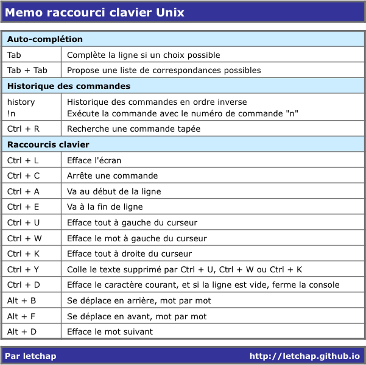

Thu 24 October 2013
Pelican
Me voilà donc sous Pelican ! Il m'a fallu un petit moment pour arriver à un résultat publiable, la version par défaut de Pelican ne me convenant pas. Finalement, j'ai effectué un certain nombre de modifications, que ce soit dans la présentation, dans le fichier de configuration, dans les plugins ou …
la suite ...
Wed 16 October 2013
Pelican
Début d'une série de billets sur la création d'un site avec le générateur de site statique Pelican. Je commence par la fin. Comment publier son site sur github, ainsi que les sources ayant permis de créer le site ? Je traiterai de la création proprement dite du site avec Pelican dans …
la suite ...
Thu 29 August 2013
Mac OS X
Dans mon dernier article, nous avons vu comment programmer le déclenchement périodique d'un programme dans Mountain Lion grace à l'utilitaire launchd. J'aimerais maintenant être averti de la bonne exécution de mon programme via le centre de notifciation de Mountain Lion.
Ce qui est décrit ci-dessous est librement inspiré de cet …
la suite ...
Thu 08 August 2013
Mac OS X
Aujourd'hui nous allons (temporairement) quitter le monde GNU/Linux pour celui de Mac OS X et voir comment réaliser l'équivalent de cron / anacron sur OS X avec l'utilitaire launchd.
Le besoin de départ est de lancer tous les mois à date fixe un programme python, y compris au redémarrage du …
la suite ...
Mon 15 July 2013
Terminal
Une petite compilation personnel des raccourcis clavier pour Unix sous une console ou un terminal, en téléchargement ici.

la suite ...
Wed 10 July 2013
Conky
Dans les deux premiers épisodes de ce tutoriel, nous avons créé un programme python récupérant les informations météo sur le site de wunderground, puis nous avons automatisé ce script afin qu'il se lance au démarrage de notre session. Il ne reste plus qu'à afficher les informations sur notre bureau.
Pour …
la suite ...
Tue 09 July 2013
Linux
Nous avons vu dans le billet précédent comment créer un programme python qui récupère les informations météo sur le site de wunderground. Nous avons "démonisé" ce script, c'est à dire que nous lui avons demandé de se déclencher à intervalle régulier.
Nous allons maintenant faire en sorte qu'il se lance …
la suite ...
Mon 08 July 2013
Python
Sur mon joli bureau openbox sur Crunchbang, j'aimerais pouvoir afficher à la demande les informations concernant la meteo au moyen d'un raccourci clavier ou d'un menu, puis refermer la fenêtre quand je n'en ai plus besoin. Evidemment, je veux des infos fraîches, avec un affichage sympa, et en consommant très …
la suite ...
Thu 20 June 2013
VirtualBox
Pour pouvoir profiter pleinement d'une distribution Linux virtualisée grâce à VirtualBox sur une ordinateur Mac, il faut pouvoir retrouver les touches spéciales qui, sans cela, rendent compliqué l'utilisation du terminal ou des éditeurs de texte.
J'ai donc remis tout çà dans une petit tableau disponible au téléchargement ici.

Pour les …
la suite ...
Fri 07 June 2013
VirtualBox
J'ai testé un certain nombre de distributions sur une VirtualBox installée sur un iMac et la plus stable à ce jour est sans conteste Crunchbang. De plus, comme c'est une distribution légère, j'ai l'impression d'avoir une bête de course. Mais surtout, surtout, fini les problèmes d'affichage, les redémarrages douloureux après …
la suite ...